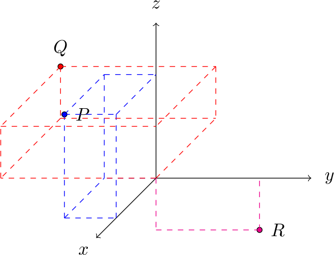

Three Dimensional Cartesian Coordinates
Introduction
In your first course on calculus, all of the functions were of a single variable, for example $y = f(x)$. We had the dependent variable $y$, depending on the independent variable $x$. This can be represented graphically by a curve in the $xy$ plane. The $xy$ plane is known as a two dimensional Cartesian coordinate system. An example of a function $f: \mathbb{R}\to\mathbb{R}$ is shown below. We remind the reader that the notation $f : \mathbb{R}\to\mathbb{R}$ means that the function $f$ takes in a single real number and returns another real number; to each real number $x$ we assign a real number $y = f(x)$.

We aim in this course to describe objects which require more dimensions to plot. An example of a function $f : \mathbb{R}^2\to\mathbb{R}$ is shown below. We remind the reader that the notation $f : \mathbb{R}\to\mathbb{R}^2$ means that the function $f$ takes in two real numbers, $x$ and $y$, and returns $z = f(x,y)$.

Later on, in addition to three dimensional Cartesian coordinates, we will also explore generalizations of polar coordinates, for example cylindrical or spherical coordinates. Being fluent in various coordinate systems allows one to exploit symmetries and solve a wider variety of problems.
The Three Dimensional Cartesian Coordinate System
We now introduce the three dimensional Cartesian coordinate system $(x,y,z)$. It now requires three numbers to specify any point in space! In this three dimensional coordinate system, space is divided up into 8 different octants. We call the octant with all of $(x,y,z)$ positive the first octant.
Note how this coordinate system has been drawn. It is called a right-handed coordinate system. This can be contrasted with a left-handed coordinate system. It is convention to always use a right-handed coordinate system. The three-dimensional right handed Cartesian coordinate system is shown below.
The three mutually perpendicular lines labelled by $x$, $y$, and $z$ go through the origin at $(0,0,0)$, and are called the coordinate axes. There are also three coordinate planes: the $xy$ plane, corresponding to $z = 0$, $yz$ plane, corresponding to $x = 0$, and the $zx$ plane, corresponding to $y = 0$.
The coordinate system gets the name right handed because if one imagines placing the fingers of one’s right hand in the direction of the $x$ axis, with the $y$ axis pointing away from your palm, then the thumb will point in the direction of the $z$ axis (try it!). The left handed coordinate system is so called because if one performs the same exercise but with one’s right hand, the $z$ axis will somehow be pointing in the opposite direction to before. This is shown in the figure below.
Plotting Points in 3 Dimensions
The set of points constituting our three dimensional space is known as $\mathbb{R}^3$. When drawing points in three dimensional space, it is very useful to draw lines parallel to the axes to clearly show where the point fits in space. Learning to draw clear three dimensional figures will be very useful. An example of these parallel lines is shown in the figure below.
Exercises
- Plot the points $P = (2,-1,2)$, $Q = (-3,-3,1)$, and $R = (0,2,-1)$ on a 3D Cartesian coordinate system.To plot these points, we should draw lines from each of the axes to show where the points are. Without these lines, it could be ambiguous where points are.
